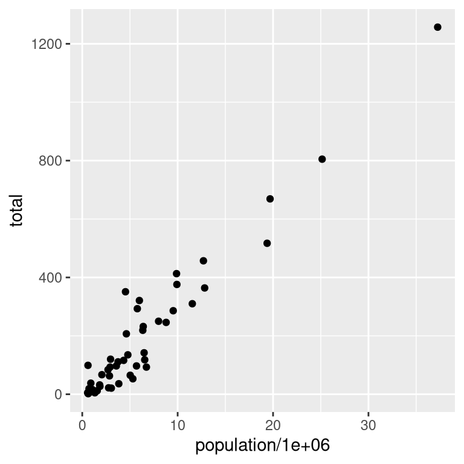
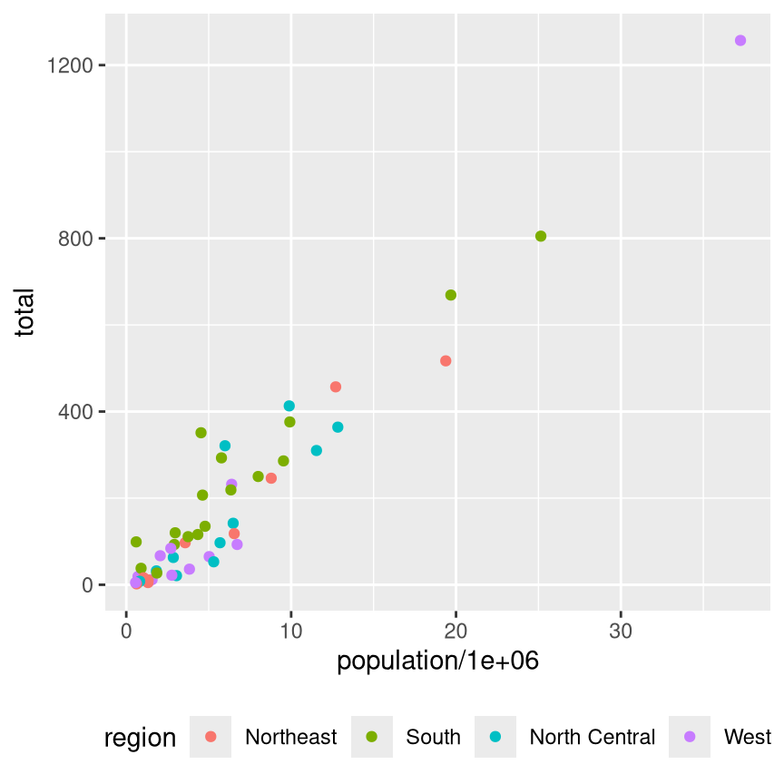
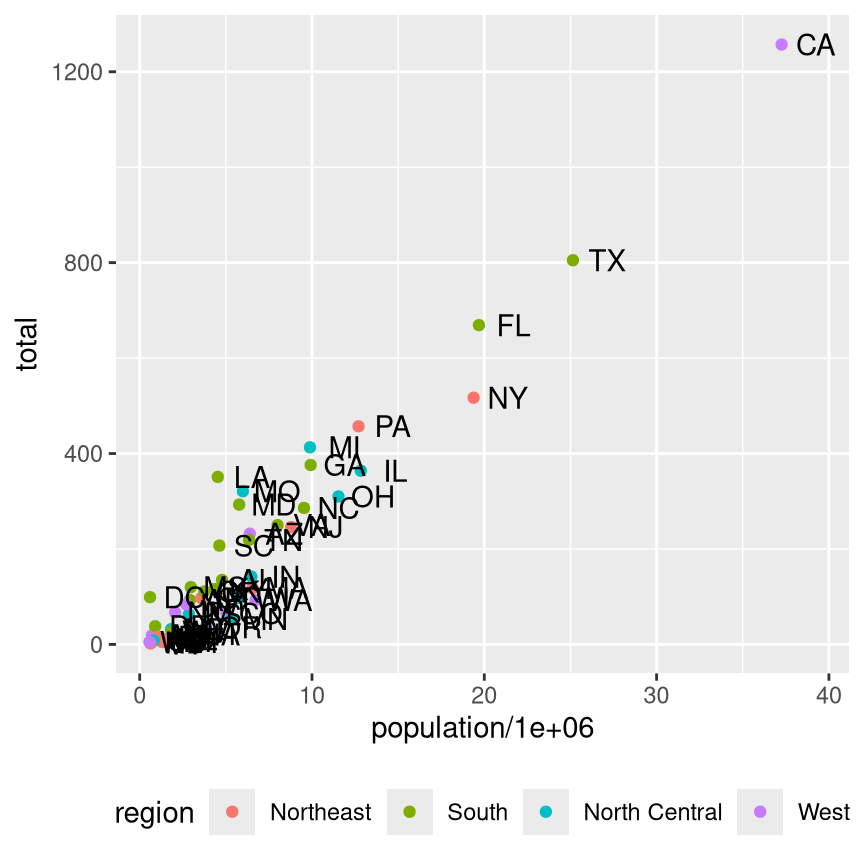
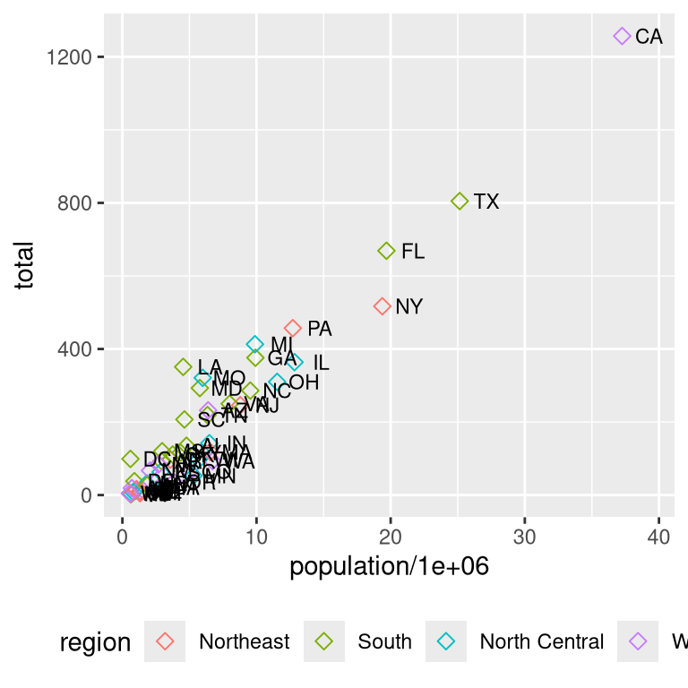
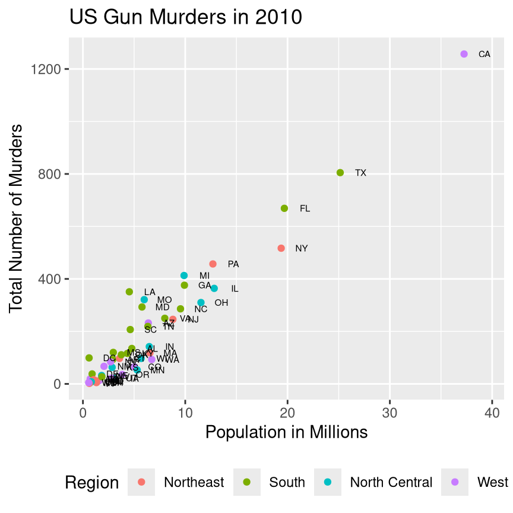
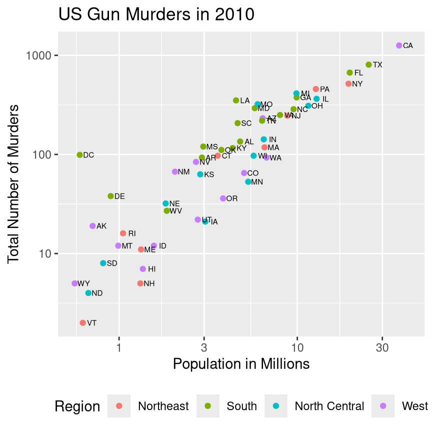

library(dslabs)
data(murders)
library(ggplot2)- 1
-
Load the
dslabspackage, as it contains themurdersdata - 2
-
Load the
murdersdata explicitly so we can see it in the environment tab - 3
-
Load the
ggplot2library
dslabs package, as it contains the murders data
murders data explicitly so we can see it in the environment tab
ggplot2 library
ggplot2 is a library that uses the grammar of graphics (gg for short) to specify plots.
The first thing we specify in ggplot2 is the geometry - the type of objects which are drawn on the plot.
Here, we can start with a nice scatterplot, which has points drawn on what is usually a Cartesian coordinate system (the x-y axes you’re familiar with).
When we specify a geometric object (geom for short), we have to tell ggplot2 how to draw it. Each geom has required aesthetics that are mapped to variables in our dataset.
geom_point requires x and y aesthetics – it needs both values to know where the points should go.
aesthetic mappings are connections between our plot and columns in our data. We create these mappings using the aes() function, which goes inside either ggplot(aes(...), ...) or inside a geom_xxx(aes(...), ...) function. aes() is never found on its own.

population/1e6 mapped to the x-axis and total (number of murders) mapped to the y-axis
When we map variables to aesthetics, ggplot2 goes to work.
xlab() and ylab(), or more generally, labs(x="My x-axis label", y="My y-axis label", title = "Plot title", subtitle = "Plot subtitle").x and y value (it will give a warning when it drops points that have an NA in either variable).One advantage of the grammar of graphics approach is that because we specify the variable mappings, ggplot2 has enough information to make all of these decisions intelligently without us having to specify how it should do each of these things. This makes programming with ggplot2 much easier, as long as you start with tidy data.
We often want to have color as an indicator of something. The murders data includes region as a column, and it is possible that some regions might have higher murder rates, due to demographics, heat waves, population density, and other factors.

population/1e6 mapped to the x-axis and total (number of murders) mapped to the y-axis. region is mapped to color.
By default, ggplot2 will pick a color scheme that is decent (but perhaps not optimal). We can set different color schemes using scales - in this case, because we have a categorical (discrete) variable, we would use scale_color_discrete(), scale_color_manual() (if we have specific colors we want to use), scale_color_brewer() (to use some common color scales), or a number of other scales in add-on packages like ggsci, tayloRswift, and many, many more
ggplot2 allows you to specify multiple layers on a chart, by adding them to the previous layers.
When adding layers that are based off of the same data, it is sometimes easier to specify the mappings inside the ggplot2() statement, so that every other layer inherits those mappings, by default. This is referred to as the global aesthetic mapping. You can, of course, override them by specifying a new mapping inside the specific geom, with some caveats:
aes.inherit = F outside of the aes() function but inside of the geom, like this: geom_point(aes(x = x, y = y), inherit.aes = FALSE).ggplot2 makes it difficult to create dual-axis plots (and for good reason - they’re hard to read).ggplot2 statement is a global mapping, and this ensures that every layer will use these mappings for x and y.

population/1e6 mapped to the x-axis and total (number of murders) mapped to the y-axis. We have added state labels for each point as well.
As it is inconvenient to have the text directly on top of the point, we set the position adjustment to “nudge” each label by x=2. This ensures that the label will be right next to (but not on top of) each point. Different amounts of “nudge” are necessary for different plot sizes, so this often has to be customized based on the actual size of the rendered figure. Setting the quarto chunk options to specify the figure size helps with not re-adjusting this every time something changes slightly.
Aesthetics are mappings between the data and the geometric objects on the chart. Often, however, we want to customize aspects of the chart without mapping them to a variable. We might want to change the point size, shape, or color, but without making any of those quantities vary with the data.

population/1e6 mapped to the x-axis and total (number of murders) mapped to the y-axis. Points are colored by region and now are open diamonds, with smaller text labels.
Notice that in Figure 5, the shape=5, size=2 is passed to geom_point(), but it is not wrapped in the aes() function. Similarly, size=3 is passed to geom_text() without being wrapped in the aes() function. This tells ggplot2 that we want to change the shape and size of the points and the size of the text, but we don’t want to do so based on the value of any of the variables in our data.
ggplot(data = murders,
aes(x = population/1e6,
y = total)) +
geom_point(aes(color = region)) +
geom_text(
aes(label = abb),
size = 2,
position = position_nudge(x = 2)
) +
theme(legend.position = "bottom") +
labs(
title = "US Gun Murders in 2010",
x = "Population in Millions",
y = "Total Number of Murders",
color = "Region"
)
population/1e6 mapped to the x-axis and total (number of murders) mapped to the y-axis. The x-axis is labeled “Population in millions” and the y-axis is labeled “Total number of murders”. The plot is titled “US Gun Murders in 2010”, and the legend is titled “Region”.
The population of states in the US varies by more than one order of magnitude – Wyoming has just over 500k people, while California has over 37 million. In such situations, it is often useful to use a log scale, so that 1, 10, and 100 are placed at equal intervals on the plot. This spaces out the tightly clustered points at the bottom left of the plot, allowing us to see lower-population states more clearly.
As murders are likely a function of population, it makes some sense to use a log scale on both the x and y axis.
ggplot(data = murders,
aes(x = population/1e6,
y = total)) +
geom_point(aes(color = region)) +
geom_text(
aes(label = abb),
size = 2,
position =
position_nudge(
x =.05)
) +
scale_x_log10() +
scale_y_log10() +
theme(legend.position = "bottom") +
labs(
title = "US Gun Murders in 2010",
x = "Population in Millions",
y = "Total Number of Murders",
color = "Region"
)